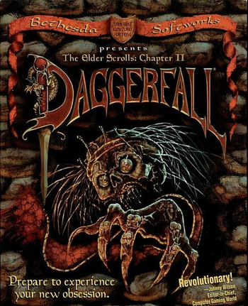

Introduction to the Game
 The Elder Scrolls II: Daggerfall is the second installment in The Elder Scrolls series. It is set in the Iliac Bay area of High Rock and Hammerfell during the Third Era of Tamriel's history, ending in an event called the Warp in the West. The plot of the game revolves around the Mantella and Totem of Tiber Septim, which together can activate the Numidium.
Plot
Daggerfall is set in the Iliac Bay, between the provinces of High Rock and Hammerfell. The player is sent here at the personal request of the Emperor. He wants the player to do two things: First, the player must free the ghost of King Lysandus from his earthly shackles; Second, the player must discover what happened to a letter from the Emperor to the former queen of Daggerfall. The letter reveals that Lysandus's mother, Nulfaga, knows the location of the Mantella, the key to resurrecting the first Numidium, a powerful brass golem. The emperor wants his spy to force Nulfaga into revealing the location of the Mantella so that the Blades can finish the reconstruction of the Numidium. Through a series of mishaps and confusions the letter fell into the hands of an orc by the name of Gortworg. Not knowing what the Mantella is, Gortworg consults Mannimarco, the King of Worms (the leader of the Necromancers). During this time the Underking, who originally destroyed the first Numidium because of its misuse by Tiber Septim, is recuperating deep within a tomb of High Rock after expending so much energy destroying it the first time. In order for the player to give the Mantella to anyone, the player must kill King Lysandus's murderer and put his ghost to rest. After accomplishing this, the player must steal the totem of Tiber Septim from King Gothryd of Daggerfall, and free the Mantella from its prison in Aetherius. Following this the player has six choices of how to deal with the Mantella. Daggerfall has several endings: If the player gives the Mantella to the Underking, he absorbs its power, passes into eternal rest, and creates a large "magicka free" area around himself. If Gortworg is victorious, he uses the Numidium to destroy the Imperial forces and the "Bay Kings", the rulers of the several provinces of the Iliac Bay. The Underking arrives shortly thereafter to destroy the first Numidium once and for all, losing his own life in the process. Gortworg then succeeds in creating Orsinium, a kingdom of Orcs. If the Blades are victorious, they succeed in recreating the first Numidium and use it to defeat the Bay Kings and the Orcs as well as unite all the provinces of Tamriel under the empire once again. If any of the Bay Kings win, that king will use the first Numidium to defeat all the other kings just before the Underking destroys him and itself. If Mannimarco receives the Mantella, he uses it to make himself a god. One more ending, as described in the strategy guide The Daggerfall Chronicles and elsewhere, was planned by Bethesda, but is not achievable in-game: if the player activates the Mantella while in possession of the totem (the controlling device of the Numidium), the Numidium will slay the player, go out of control, and be destroyed by Imperial forces.
Introduction to the Main Quest
Daggerfall is a city in the Breton homeland of High Rock. The player is sent here at the personal request of the Emperor. He wants the player to do two things. Firstly, the player must free the ghost of the late King Lysandus from his earthly shackles. Secondly, the player must retrieve a letter from the Emperor to a Blades spy in the court of Daggerfall. The letter reveals that Lysandus' mother, Nulfaga, knows the location of the Mantella, the key to resurrecting the first Numidium. The Emperor wants his spy to force Nulfaga into revealing the location of the Mantella so that the Blades can finish the reconstruction of the Numidium. Through a series of mishaps and confusions, the letter fell into the hands of an orc by the name of Gortworg. Gortworg, not knowing what the Mantella is, consults Mannimarco, the King of Worms (the leader of the Necromancers). During this time, the Underking, who originally destroyed the first Numidium because of its misuse by Tiber Septim, is recuperating deep within a tomb of High Rock, after expending so much energy destroying it the first time. In order for the player to give the Mantella to anyone, the player must kill king Lysandus' murderer and put his ghost to rest. After accomplishing this, the power of the Mantella restores the Underking's power.